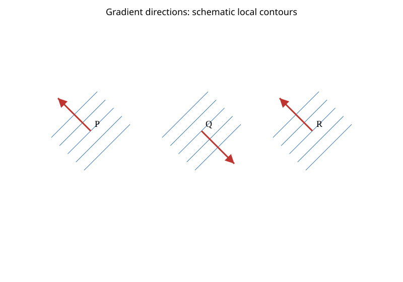
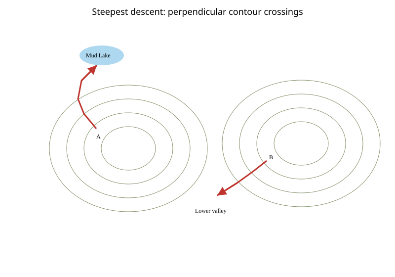
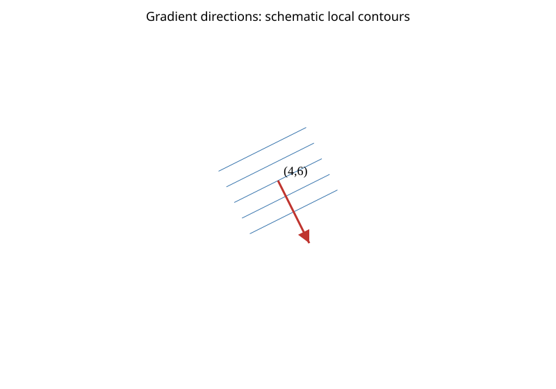
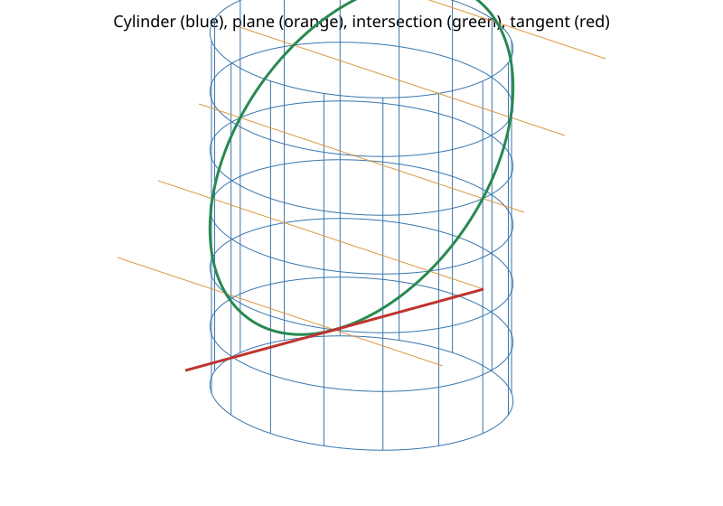
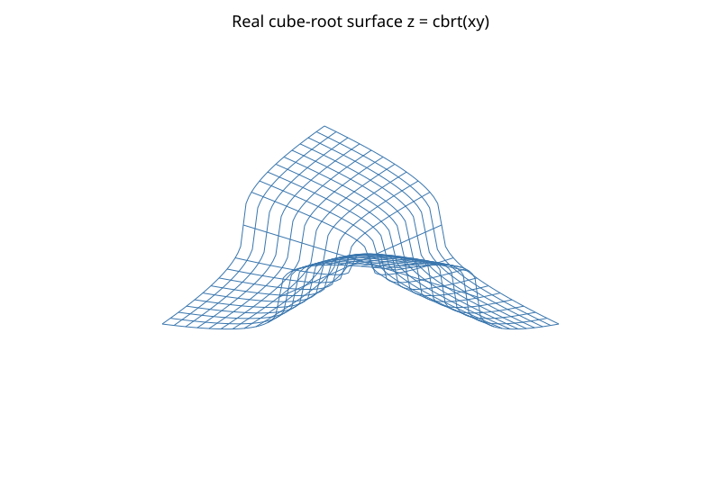

출처: Calculus, 9, en · 인쇄본 쪽 1043, 1044, 1045, 1046 / PDF 쪽 1080, 1081, 1082, 1083 · 검증 완료 77 / 전체 77문항
공개 범위
전체77문항과 모든 소문항.
Published scope
All77 exercises and every subpart.
EXERCISE 1방향미분과 기울기벡터Directional derivatives and gradientsExercise 1 · p. 1043 · PDF p. 1080개념 보기 · Concept
한국어
문제 요약
Kearney K에서 Sioux City S까지 300 km이다. 등압선은 4 mb 간격이고 K 근처에서 KS 방향의 인접선 간격은 약 50 km이다. K에서 S 방향의 압력 변화율과 단위를 추정하라.
힌트. 기울기와 단위 방향벡터의 내적을 사용한다. 등위면의 기울기는 법선이다.
해설.
S 쪽으로 등압선 값이 낮아진다.
인접선 사이의 압력 차이를 해당 방향 거리로 나눈다: −4/50≈−0.08.
최종 답. 약 −0.08 mb/km.
검산·주의점. 원문 그림에서 KS 길이에 대한 국소 선간격을 읽은 근사이다. 전체 구간 평균과 국소 미분을 구별한다.
English
Problem summary
Kearney K to Sioux City S is 300 km. Isobars differ by 4 mb; near K their spacing along KS is about 50 km. Estimate the pressure derivative toward S and its units.
Hint. Use the dot product of the gradient with a unit direction. A level-surface gradient is normal.
Solution.
Pressure decreases toward S.
Divide the adjacent pressure difference by distance along the direction: −4/50≈−0.08.
Final answer. Approximately −0.08 mb/km.
Check and conditions. A graphical local-spacing estimate relative to KS; this is not the average over the full segment.
EXERCISE 2방향미분과 기울기벡터Directional derivatives and gradientsExercise 2 · p. 1043 · PDF p. 1080개념 보기 · Concept
한국어
문제 요약
Dubbo에서 Sydney 방향으로 기온 등고선 값이 낮아진다. 원문 지도는 3°C 간격이며 그 방향에서 Dubbo를 끼는 30°C와 27°C 등온선의 거리는 약 160 km이다. 방향미분과 단위를 추정하라.
힌트. 기울기와 단위 방향벡터의 내적을 사용한다. 등위면의 기울기는 법선이다.
해설.
지도 축척으로 두 등온선 사이 방향 거리를 추정한다.
변화율≈(27−30)/160=−0.01875.
최종 답. 약 −0.02°C/km.
검산·주의점. 그림 측정에 따라 근삿값이 달라지며 음의 부호는 Sydney 쪽 냉각과 일치한다.
English
Problem summary
Temperature decreases from Dubbo toward Sydney. The source has 3°C contour intervals; along this direction the 30°C and 27°C contours bracketing Dubbo are about 160 km apart. Estimate the directional derivative and its units.
Hint. Use the dot product of the gradient with a unit direction. A level-surface gradient is normal.
Solution.
Estimate directional distance between the bracketing contours using the map scale.
Rate≈(27−30)/160=−0.01875.
Final answer. Approximately −0.02°C/km.
Check and conditions. Graphical readings vary; the negative sign agrees with cooling toward Sydney.
EXERCISE 3방향미분과 기울기벡터Directional derivatives and gradientsExercise 3 · p. 1043 · PDF p. 1080개념 보기 · Concept
한국어
문제 요약
풍속 v와 실제온도 T에 따른 체감온도 f에 대해 f(−15,30)=−26,f(−25,30)=−39,f(−20,20)=−30,f(−20,40)=−34이다. \(u=(1,1)/\sqrt2\) 방향의 Duf(−20,30)을 추정하라.
힌트. 기울기와 단위 방향벡터의 내적을 사용한다. 등위면의 기울기는 법선이다.
해설.
중앙차분 fT≈13/10, fv≈−4/20이다.
따라서 \(D_uf\approx(1.3-0.2)/\sqrt2=11\sqrt2/20\).
최종 답. \(11\sqrt2/20\approx0.778\).
검산·주의점. 정의역과 단위벡터 조건을 확인하고 계산을 다시 대입했다.
English
Problem summary
Wind chill f(T,v) has f(−15,30)=−26,f(−25,30)=−39,f(−20,20)=−30,f(−20,40)=−34. Estimate Duf(−20,30) for \(u=(1,1)/\sqrt2\).
Hint. Use the dot product of the gradient with a unit direction. A level-surface gradient is normal.
Solution.
Centered differences give fT≈13/10 and fv≈−4/20.
Thus \(D_uf\approx(1.3-0.2)/\sqrt2=11\sqrt2/20\).
Final answer. \(11\sqrt2/20\approx0.778\).
Check and conditions. The domain and unit-vector conditions were checked and results substituted back.
EXERCISE 4방향미분과 기울기벡터Directional derivatives and gradientsExercise 4 · p. 1043 · PDF p. 1080개념 보기 · Concept
한국어
문제 요약
\(x \left(- x + y^{3}\right)\), P=\(\left[\begin{matrix}1\\2\end{matrix}\right]\), v=\(\left[\begin{matrix}\frac{1}{2}\\\frac{\sqrt{3}}{2}\end{matrix}\right]\). 주어진 방향의 방향미분을 구하라.
힌트. 기울기와 단위 방향벡터의 내적을 사용한다. 등위면의 기울기는 법선이다.
해설.
기울기: \(\left[\begin{matrix}- 2 x + y^{3}\\3 x y^{2}\end{matrix}\right]\).
P에서 \(\left[\begin{matrix}6\\12\end{matrix}\right]\). 단위 방향은 \(\left[\begin{matrix}\frac{1}{2}\\\frac{\sqrt{3}}{2}\end{matrix}\right]\).
내적을 계산하면 \(3 + 6 \sqrt{3}\).
최종 답. \(3 + 6 \sqrt{3}\).
검산·주의점. 직선 경로 P+hu를 먼저 대입한 단변수 미분과 기호적으로 일치한다.
English
Problem summary
\(x \left(- x + y^{3}\right)\), P=\(\left[\begin{matrix}1\\2\end{matrix}\right]\), v=\(\left[\begin{matrix}\frac{1}{2}\\\frac{\sqrt{3}}{2}\end{matrix}\right]\). Find the directional derivative in the specified direction.
Hint. Use the dot product of the gradient with a unit direction. A level-surface gradient is normal.
Solution.
Gradient: \(\left[\begin{matrix}- 2 x + y^{3}\\3 x y^{2}\end{matrix}\right]\).
At P: \(\left[\begin{matrix}6\\12\end{matrix}\right]\). Unit direction: \(\left[\begin{matrix}\frac{1}{2}\\\frac{\sqrt{3}}{2}\end{matrix}\right]\).
The dot product is \(3 + 6 \sqrt{3}\).
Final answer. \(3 + 6 \sqrt{3}\).
Check and conditions. Symbolically agrees with differentiating the line restriction at h=0.
EXERCISE 5방향미분과 기울기벡터Directional derivatives and gradientsExercise 5 · p. 1043 · PDF p. 1080개념 보기 · Concept
한국어
문제 요약
\(y \cos{\left(x y \right)}\), P=\(\left[\begin{matrix}0\\1\end{matrix}\right]\), v=\(\left[\begin{matrix}\frac{\sqrt{2}}{2}\\\frac{\sqrt{2}}{2}\end{matrix}\right]\). 주어진 방향의 방향미분을 구하라.
힌트. 기울기와 단위 방향벡터의 내적을 사용한다. 등위면의 기울기는 법선이다.
해설.
기울기: \(\left[\begin{matrix}- y^{2} \sin{\left(x y \right)}\\- x y \sin{\left(x y \right)} + \cos{\left(x y \right)}\end{matrix}\right]\).
P에서 \(\left[\begin{matrix}0\\1\end{matrix}\right]\). 단위 방향은 \(\left[\begin{matrix}\frac{\sqrt{2}}{2}\\\frac{\sqrt{2}}{2}\end{matrix}\right]\).
내적을 계산하면 \(\frac{\sqrt{2}}{2}\).
최종 답. \(\frac{\sqrt{2}}{2}\).
검산·주의점. 직선 경로 P+hu를 먼저 대입한 단변수 미분과 기호적으로 일치한다.
English
Problem summary
\(y \cos{\left(x y \right)}\), P=\(\left[\begin{matrix}0\\1\end{matrix}\right]\), v=\(\left[\begin{matrix}\frac{\sqrt{2}}{2}\\\frac{\sqrt{2}}{2}\end{matrix}\right]\). Find the directional derivative in the specified direction.
Hint. Use the dot product of the gradient with a unit direction. A level-surface gradient is normal.
Solution.
Gradient: \(\left[\begin{matrix}- y^{2} \sin{\left(x y \right)}\\- x y \sin{\left(x y \right)} + \cos{\left(x y \right)}\end{matrix}\right]\).
At P: \(\left[\begin{matrix}0\\1\end{matrix}\right]\). Unit direction: \(\left[\begin{matrix}\frac{\sqrt{2}}{2}\\\frac{\sqrt{2}}{2}\end{matrix}\right]\).
The dot product is \(\frac{\sqrt{2}}{2}\).
Final answer. \(\frac{\sqrt{2}}{2}\).
Check and conditions. Symbolically agrees with differentiating the line restriction at h=0.
EXERCISE 6방향미분과 기울기벡터Directional derivatives and gradientsExercise 6 · p. 1043 · PDF p. 1080개념 보기 · Concept
한국어
문제 요약
\(\sqrt{2 x + 3 y}\), P=\(\left[\begin{matrix}3\\1\end{matrix}\right]\), v=\(\left[\begin{matrix}\frac{\sqrt{3}}{2}\\- \frac{1}{2}\end{matrix}\right]\). 주어진 방향의 방향미분을 구하라.
힌트. 기울기와 단위 방향벡터의 내적을 사용한다. 등위면의 기울기는 법선이다.
해설.
기울기: \(\left[\begin{matrix}\frac{1}{\sqrt{2 x + 3 y}}\\\frac{3}{2 \sqrt{2 x + 3 y}}\end{matrix}\right]\).
P에서 \(\left[\begin{matrix}\frac{1}{3}\\\frac{1}{2}\end{matrix}\right]\). 단위 방향은 \(\left[\begin{matrix}\frac{\sqrt{3}}{2}\\- \frac{1}{2}\end{matrix}\right]\).
내적을 계산하면 \(- \frac{1}{4} + \frac{\sqrt{3}}{6}\).
최종 답. \(- \frac{1}{4} + \frac{\sqrt{3}}{6}\).
검산·주의점. 직선 경로 P+hu를 먼저 대입한 단변수 미분과 기호적으로 일치한다.
English
Problem summary
\(\sqrt{2 x + 3 y}\), P=\(\left[\begin{matrix}3\\1\end{matrix}\right]\), v=\(\left[\begin{matrix}\frac{\sqrt{3}}{2}\\- \frac{1}{2}\end{matrix}\right]\). Find the directional derivative in the specified direction.
Hint. Use the dot product of the gradient with a unit direction. A level-surface gradient is normal.
Solution.
Gradient: \(\left[\begin{matrix}\frac{1}{\sqrt{2 x + 3 y}}\\\frac{3}{2 \sqrt{2 x + 3 y}}\end{matrix}\right]\).
At P: \(\left[\begin{matrix}\frac{1}{3}\\\frac{1}{2}\end{matrix}\right]\). Unit direction: \(\left[\begin{matrix}\frac{\sqrt{3}}{2}\\- \frac{1}{2}\end{matrix}\right]\).
The dot product is \(- \frac{1}{4} + \frac{\sqrt{3}}{6}\).
Final answer. \(- \frac{1}{4} + \frac{\sqrt{3}}{6}\).
Check and conditions. Symbolically agrees with differentiating the line restriction at h=0.
EXERCISE 7방향미분과 기울기벡터Directional derivatives and gradientsExercise 7 · p. 1043 · PDF p. 1080개념 보기 · Concept
한국어
문제 요약
\(\operatorname{atan}{\left(x y \right)}\), P=\(\left[\begin{matrix}2\\-3\end{matrix}\right]\), v=\(\left[\begin{matrix}- \frac{\sqrt{2}}{2}\\\frac{\sqrt{2}}{2}\end{matrix}\right]\). 주어진 방향의 방향미분을 구하라.
P에서 \(\left[\begin{matrix}- \frac{3}{37}\\\frac{2}{37}\end{matrix}\right]\). 단위 방향은 \(\left[\begin{matrix}- \frac{\sqrt{2}}{2}\\\frac{\sqrt{2}}{2}\end{matrix}\right]\).
내적을 계산하면 \(\frac{5 \sqrt{2}}{74}\).
최종 답. \(\frac{5 \sqrt{2}}{74}\).
검산·주의점. 직선 경로 P+hu를 먼저 대입한 단변수 미분과 기호적으로 일치한다.
English
Problem summary
\(\operatorname{atan}{\left(x y \right)}\), P=\(\left[\begin{matrix}2\\-3\end{matrix}\right]\), v=\(\left[\begin{matrix}- \frac{\sqrt{2}}{2}\\\frac{\sqrt{2}}{2}\end{matrix}\right]\). Find the directional derivative in the specified direction.
Hint. Use the dot product of the gradient with a unit direction. A level-surface gradient is normal.
At P: \(\left[\begin{matrix}- \frac{3}{37}\\\frac{2}{37}\end{matrix}\right]\). Unit direction: \(\left[\begin{matrix}- \frac{\sqrt{2}}{2}\\\frac{\sqrt{2}}{2}\end{matrix}\right]\).
The dot product is \(\frac{5 \sqrt{2}}{74}\).
Final answer. \(\frac{5 \sqrt{2}}{74}\).
Check and conditions. Symbolically agrees with differentiating the line restriction at h=0.
EXERCISE 8방향미분과 기울기벡터Directional derivatives and gradientsExercise 8 · p. 1043 · PDF p. 1080개념 보기 · Concept
기울기: \(\left[\begin{matrix}2 x e^{y}\\x^{2} e^{y}\end{matrix}\right]\).
P에서 \(\left[\begin{matrix}6\\9\end{matrix}\right]\). 단위 방향은 \(\left[\begin{matrix}\frac{3}{5}\\- \frac{4}{5}\end{matrix}\right]\).
내적을 계산하면 \(- \frac{18}{5}\).
최종 답. (a) \(\left[\begin{matrix}2 x e^{y}\\x^{2} e^{y}\end{matrix}\right]\); (b) \(\left[\begin{matrix}6\\9\end{matrix}\right]\); (c) \(- \frac{18}{5}\).
검산·주의점. 직선 경로 P+hu를 먼저 대입한 단변수 미분과 기호적으로 일치한다.
English
Problem summary
\(x^{2} e^{y}\), P=\(\left[\begin{matrix}3\\0\end{matrix}\right]\), v=\(\left[\begin{matrix}3\\-4\end{matrix}\right]\). Find the gradient, its value at P, and the directional derivative.
Hint. Use the dot product of the gradient with a unit direction. A level-surface gradient is normal.
Solution.
Gradient: \(\left[\begin{matrix}2 x e^{y}\\x^{2} e^{y}\end{matrix}\right]\).
At P: \(\left[\begin{matrix}6\\9\end{matrix}\right]\). Unit direction: \(\left[\begin{matrix}\frac{3}{5}\\- \frac{4}{5}\end{matrix}\right]\).
The dot product is \(- \frac{18}{5}\).
Final answer. (a) \(\left[\begin{matrix}2 x e^{y}\\x^{2} e^{y}\end{matrix}\right]\); (b) \(\left[\begin{matrix}6\\9\end{matrix}\right]\); (c) \(- \frac{18}{5}\).
Check and conditions. Symbolically agrees with differentiating the line restriction at h=0.
EXERCISE 9방향미분과 기울기벡터Directional derivatives and gradientsExercise 9 · p. 1043 · PDF p. 1080개념 보기 · Concept
P에서 \(\left[\begin{matrix}1\\-2\end{matrix}\right]\). 단위 방향은 \(\left[\begin{matrix}\frac{3}{5}\\\frac{4}{5}\end{matrix}\right]\).
내적을 계산하면 \(-1\).
최종 답. (a) \(\left[\begin{matrix}\frac{1}{y}\\- \frac{x}{y^{2}}\end{matrix}\right]\); (b) \(\left[\begin{matrix}1\\-2\end{matrix}\right]\); (c) \(-1\).
검산·주의점. 직선 경로 P+hu를 먼저 대입한 단변수 미분과 기호적으로 일치한다.
English
Problem summary
\(\frac{x}{y}\), P=\(\left[\begin{matrix}2\\1\end{matrix}\right]\), v=\(\left[\begin{matrix}3\\4\end{matrix}\right]\). Find the gradient, its value at P, and the directional derivative.
Hint. Use the dot product of the gradient with a unit direction. A level-surface gradient is normal.
기울기: \(\left[\begin{matrix}2 x \log{\left(y \right)}\\\frac{x^{2}}{y}\end{matrix}\right]\).
P에서 \(\left[\begin{matrix}0\\9\end{matrix}\right]\). 단위 방향은 \(\left[\begin{matrix}- \frac{5}{13}\\\frac{12}{13}\end{matrix}\right]\).
내적을 계산하면 \(\frac{108}{13}\).
최종 답. (a) \(\left[\begin{matrix}2 x \log{\left(y \right)}\\\frac{x^{2}}{y}\end{matrix}\right]\); (b) \(\left[\begin{matrix}0\\9\end{matrix}\right]\); (c) \(\frac{108}{13}\).
검산·주의점. 직선 경로 P+hu를 먼저 대입한 단변수 미분과 기호적으로 일치한다.
English
Problem summary
\(x^{2} \log{\left(y \right)}\), P=\(\left[\begin{matrix}3\\1\end{matrix}\right]\), v=\(\left[\begin{matrix}-5\\12\end{matrix}\right]\). Find the gradient, its value at P, and the directional derivative.
Hint. Use the dot product of the gradient with a unit direction. A level-surface gradient is normal.
Solution.
Gradient: \(\left[\begin{matrix}2 x \log{\left(y \right)}\\\frac{x^{2}}{y}\end{matrix}\right]\).
At P: \(\left[\begin{matrix}0\\9\end{matrix}\right]\). Unit direction: \(\left[\begin{matrix}- \frac{5}{13}\\\frac{12}{13}\end{matrix}\right]\).
The dot product is \(\frac{108}{13}\).
Final answer. (a) \(\left[\begin{matrix}2 x \log{\left(y \right)}\\\frac{x^{2}}{y}\end{matrix}\right]\); (b) \(\left[\begin{matrix}0\\9\end{matrix}\right]\); (c) \(\frac{108}{13}\).
Check and conditions. Symbolically agrees with differentiating the line restriction at h=0.
EXERCISE 11방향미분과 기울기벡터Directional derivatives and gradientsExercise 11 · p. 1043 · PDF p. 1080개념 보기 · Concept
한국어
문제 요약
\(x y z \left(x - z^{2}\right)\), P=\(\left[\begin{matrix}2\\-1\\1\end{matrix}\right]\), v=\(\left[\begin{matrix}0\\4\\-3\end{matrix}\right]\). 기울기 함수, P의 기울기, 방향미분을 구하라.
힌트. 기울기와 단위 방향벡터의 내적을 사용한다. 등위면의 기울기는 법선이다.
해설.
기울기: \(\left[\begin{matrix}y z \left(2 x - z^{2}\right)\\x z \left(x - z^{2}\right)\\x y \left(x - 3 z^{2}\right)\end{matrix}\right]\).
P에서 \(\left[\begin{matrix}-3\\2\\2\end{matrix}\right]\). 단위 방향은 \(\left[\begin{matrix}0\\\frac{4}{5}\\- \frac{3}{5}\end{matrix}\right]\).
내적을 계산하면 \(\frac{2}{5}\).
최종 답. (a) \(\left[\begin{matrix}y z \left(2 x - z^{2}\right)\\x z \left(x - z^{2}\right)\\x y \left(x - 3 z^{2}\right)\end{matrix}\right]\); (b) \(\left[\begin{matrix}-3\\2\\2\end{matrix}\right]\); (c) \(\frac{2}{5}\).
검산·주의점. 직선 경로 P+hu를 먼저 대입한 단변수 미분과 기호적으로 일치한다.
English
Problem summary
\(x y z \left(x - z^{2}\right)\), P=\(\left[\begin{matrix}2\\-1\\1\end{matrix}\right]\), v=\(\left[\begin{matrix}0\\4\\-3\end{matrix}\right]\). Find the gradient, its value at P, and the directional derivative.
Hint. Use the dot product of the gradient with a unit direction. A level-surface gradient is normal.
Solution.
Gradient: \(\left[\begin{matrix}y z \left(2 x - z^{2}\right)\\x z \left(x - z^{2}\right)\\x y \left(x - 3 z^{2}\right)\end{matrix}\right]\).
At P: \(\left[\begin{matrix}-3\\2\\2\end{matrix}\right]\). Unit direction: \(\left[\begin{matrix}0\\\frac{4}{5}\\- \frac{3}{5}\end{matrix}\right]\).
The dot product is \(\frac{2}{5}\).
Final answer. (a) \(\left[\begin{matrix}y z \left(2 x - z^{2}\right)\\x z \left(x - z^{2}\right)\\x y \left(x - 3 z^{2}\right)\end{matrix}\right]\); (b) \(\left[\begin{matrix}-3\\2\\2\end{matrix}\right]\); (c) \(\frac{2}{5}\).
Check and conditions. Symbolically agrees with differentiating the line restriction at h=0.
EXERCISE 12방향미분과 기울기벡터Directional derivatives and gradientsExercise 12 · p. 1043 · PDF p. 1080개념 보기 · Concept
기울기: \(\left[\begin{matrix}y^{3} z e^{x y z}\\y \left(x y z + 2\right) e^{x y z}\\x y^{3} e^{x y z}\end{matrix}\right]\).
P에서 \(\left[\begin{matrix}-1\\2\\0\end{matrix}\right]\). 단위 방향은 \(\left[\begin{matrix}\frac{3}{13}\\\frac{4}{13}\\\frac{12}{13}\end{matrix}\right]\).
내적을 계산하면 \(\frac{5}{13}\).
최종 답. (a) \(\left[\begin{matrix}y^{3} z e^{x y z}\\y \left(x y z + 2\right) e^{x y z}\\x y^{3} e^{x y z}\end{matrix}\right]\); (b) \(\left[\begin{matrix}-1\\2\\0\end{matrix}\right]\); (c) \(\frac{5}{13}\).
검산·주의점. 직선 경로 P+hu를 먼저 대입한 단변수 미분과 기호적으로 일치한다.
English
Problem summary
\(y^{2} e^{x y z}\), P=\(\left[\begin{matrix}0\\1\\-1\end{matrix}\right]\), v=\(\left[\begin{matrix}3\\4\\12\end{matrix}\right]\). Find the gradient, its value at P, and the directional derivative.
Hint. Use the dot product of the gradient with a unit direction. A level-surface gradient is normal.
Solution.
Gradient: \(\left[\begin{matrix}y^{3} z e^{x y z}\\y \left(x y z + 2\right) e^{x y z}\\x y^{3} e^{x y z}\end{matrix}\right]\).
At P: \(\left[\begin{matrix}-1\\2\\0\end{matrix}\right]\). Unit direction: \(\left[\begin{matrix}\frac{3}{13}\\\frac{4}{13}\\\frac{12}{13}\end{matrix}\right]\).
The dot product is \(\frac{5}{13}\).
Final answer. (a) \(\left[\begin{matrix}y^{3} z e^{x y z}\\y \left(x y z + 2\right) e^{x y z}\\x y^{3} e^{x y z}\end{matrix}\right]\); (b) \(\left[\begin{matrix}-1\\2\\0\end{matrix}\right]\); (c) \(\frac{5}{13}\).
Check and conditions. Symbolically agrees with differentiating the line restriction at h=0.
EXERCISE 13방향미분과 기울기벡터Directional derivatives and gradientsExercise 13 · p. 1043 · PDF p. 1080개념 보기 · Concept
한국어
문제 요약
\(e^{x} \sin{\left(y \right)}\), P=\(\left[\begin{matrix}0\\\frac{\pi}{3}\end{matrix}\right]\), v=\(\left[\begin{matrix}-6\\8\end{matrix}\right]\). 주어진 방향의 방향미분을 구하라.
P에서 \(\left[\begin{matrix}\frac{\sqrt{3}}{2}\\\frac{1}{2}\end{matrix}\right]\). 단위 방향은 \(\left[\begin{matrix}- \frac{3}{5}\\\frac{4}{5}\end{matrix}\right]\).
내적을 계산하면 \(\frac{2}{5} - \frac{3 \sqrt{3}}{10}\).
최종 답. \(\frac{2}{5} - \frac{3 \sqrt{3}}{10}\).
검산·주의점. 직선 경로 P+hu를 먼저 대입한 단변수 미분과 기호적으로 일치한다.
English
Problem summary
\(e^{x} \sin{\left(y \right)}\), P=\(\left[\begin{matrix}0\\\frac{\pi}{3}\end{matrix}\right]\), v=\(\left[\begin{matrix}-6\\8\end{matrix}\right]\). Find the directional derivative in the specified direction.
Hint. Use the dot product of the gradient with a unit direction. A level-surface gradient is normal.
At P: \(\left[\begin{matrix}\frac{\sqrt{3}}{2}\\\frac{1}{2}\end{matrix}\right]\). Unit direction: \(\left[\begin{matrix}- \frac{3}{5}\\\frac{4}{5}\end{matrix}\right]\).
The dot product is \(\frac{2}{5} - \frac{3 \sqrt{3}}{10}\).
Final answer. \(\frac{2}{5} - \frac{3 \sqrt{3}}{10}\).
Check and conditions. Symbolically agrees with differentiating the line restriction at h=0.
EXERCISE 14방향미분과 기울기벡터Directional derivatives and gradientsExercise 14 · p. 1043 · PDF p. 1080개념 보기 · Concept
한국어
문제 요약
\(\frac{x}{x^{2} + y^{2}}\), P=\(\left[\begin{matrix}1\\2\end{matrix}\right]\), v=\(\left[\begin{matrix}3\\5\end{matrix}\right]\). 주어진 방향의 방향미분을 구하라.
P에서 \(\left[\begin{matrix}\frac{3}{25}\\- \frac{4}{25}\end{matrix}\right]\). 단위 방향은 \(\left[\begin{matrix}\frac{3 \sqrt{34}}{34}\\\frac{5 \sqrt{34}}{34}\end{matrix}\right]\).
내적을 계산하면 \(- \frac{11 \sqrt{34}}{850}\).
최종 답. \(- \frac{11 \sqrt{34}}{850}\).
검산·주의점. 직선 경로 P+hu를 먼저 대입한 단변수 미분과 기호적으로 일치한다.
English
Problem summary
\(\frac{x}{x^{2} + y^{2}}\), P=\(\left[\begin{matrix}1\\2\end{matrix}\right]\), v=\(\left[\begin{matrix}3\\5\end{matrix}\right]\). Find the directional derivative in the specified direction.
Hint. Use the dot product of the gradient with a unit direction. A level-surface gradient is normal.
At P: \(\left[\begin{matrix}\frac{3}{25}\\- \frac{4}{25}\end{matrix}\right]\). Unit direction: \(\left[\begin{matrix}\frac{3 \sqrt{34}}{34}\\\frac{5 \sqrt{34}}{34}\end{matrix}\right]\).
The dot product is \(- \frac{11 \sqrt{34}}{850}\).
Final answer. \(- \frac{11 \sqrt{34}}{850}\).
Check and conditions. Symbolically agrees with differentiating the line restriction at h=0.
EXERCISE 15방향미분과 기울기벡터Directional derivatives and gradientsExercise 15 · p. 1043 · PDF p. 1080개념 보기 · Concept
한국어
문제 요약
\(s \sqrt{t}\), P=\(\left[\begin{matrix}2\\4\end{matrix}\right]\), v=\(\left[\begin{matrix}2\\-1\end{matrix}\right]\). 주어진 방향의 방향미분을 구하라.
P에서 \(\left[\begin{matrix}2\\\frac{1}{2}\end{matrix}\right]\). 단위 방향은 \(\left[\begin{matrix}\frac{2 \sqrt{5}}{5}\\- \frac{\sqrt{5}}{5}\end{matrix}\right]\).
내적을 계산하면 \(\frac{7 \sqrt{5}}{10}\).
최종 답. \(\frac{7 \sqrt{5}}{10}\).
검산·주의점. 직선 경로 P+hu를 먼저 대입한 단변수 미분과 기호적으로 일치한다.
English
Problem summary
\(s \sqrt{t}\), P=\(\left[\begin{matrix}2\\4\end{matrix}\right]\), v=\(\left[\begin{matrix}2\\-1\end{matrix}\right]\). Find the directional derivative in the specified direction.
Hint. Use the dot product of the gradient with a unit direction. A level-surface gradient is normal.
At P: \(\left[\begin{matrix}2\\\frac{1}{2}\end{matrix}\right]\). Unit direction: \(\left[\begin{matrix}\frac{2 \sqrt{5}}{5}\\- \frac{\sqrt{5}}{5}\end{matrix}\right]\).
The dot product is \(\frac{7 \sqrt{5}}{10}\).
Final answer. \(\frac{7 \sqrt{5}}{10}\).
Check and conditions. Symbolically agrees with differentiating the line restriction at h=0.
EXERCISE 16방향미분과 기울기벡터Directional derivatives and gradientsExercise 16 · p. 1043 · PDF p. 1080개념 보기 · Concept
한국어
문제 요약
\(u^{2} e^{- v}\), P=\(\left[\begin{matrix}3\\0\end{matrix}\right]\), v=\(\left[\begin{matrix}3\\4\end{matrix}\right]\). 주어진 방향의 방향미분을 구하라.
힌트. 기울기와 단위 방향벡터의 내적을 사용한다. 등위면의 기울기는 법선이다.
해설.
기울기: \(\left[\begin{matrix}2 u e^{- v}\\- u^{2} e^{- v}\end{matrix}\right]\).
P에서 \(\left[\begin{matrix}6\\-9\end{matrix}\right]\). 단위 방향은 \(\left[\begin{matrix}\frac{3}{5}\\\frac{4}{5}\end{matrix}\right]\).
내적을 계산하면 \(- \frac{18}{5}\).
최종 답. \(- \frac{18}{5}\).
검산·주의점. 직선 경로 P+hu를 먼저 대입한 단변수 미분과 기호적으로 일치한다.
English
Problem summary
\(u^{2} e^{- v}\), P=\(\left[\begin{matrix}3\\0\end{matrix}\right]\), v=\(\left[\begin{matrix}3\\4\end{matrix}\right]\). Find the directional derivative in the specified direction.
Hint. Use the dot product of the gradient with a unit direction. A level-surface gradient is normal.
Solution.
Gradient: \(\left[\begin{matrix}2 u e^{- v}\\- u^{2} e^{- v}\end{matrix}\right]\).
At P: \(\left[\begin{matrix}6\\-9\end{matrix}\right]\). Unit direction: \(\left[\begin{matrix}\frac{3}{5}\\\frac{4}{5}\end{matrix}\right]\).
The dot product is \(- \frac{18}{5}\).
Final answer. \(- \frac{18}{5}\).
Check and conditions. Symbolically agrees with differentiating the line restriction at h=0.
EXERCISE 17방향미분과 기울기벡터Directional derivatives and gradientsExercise 17 · p. 1043 · PDF p. 1080개념 보기 · Concept
한국어
문제 요약
\(y \left(x^{2} + y z\right)\), P=\(\left[\begin{matrix}1\\2\\3\end{matrix}\right]\), v=\(\left[\begin{matrix}2\\-1\\2\end{matrix}\right]\). 주어진 방향의 방향미분을 구하라.
힌트. 기울기와 단위 방향벡터의 내적을 사용한다. 등위면의 기울기는 법선이다.
해설.
기울기: \(\left[\begin{matrix}2 x y\\x^{2} + 2 y z\\y^{2}\end{matrix}\right]\).
P에서 \(\left[\begin{matrix}4\\13\\4\end{matrix}\right]\). 단위 방향은 \(\left[\begin{matrix}\frac{2}{3}\\- \frac{1}{3}\\\frac{2}{3}\end{matrix}\right]\).
내적을 계산하면 \(1\).
최종 답. \(1\).
검산·주의점. 직선 경로 P+hu를 먼저 대입한 단변수 미분과 기호적으로 일치한다.
English
Problem summary
\(y \left(x^{2} + y z\right)\), P=\(\left[\begin{matrix}1\\2\\3\end{matrix}\right]\), v=\(\left[\begin{matrix}2\\-1\\2\end{matrix}\right]\). Find the directional derivative in the specified direction.
Hint. Use the dot product of the gradient with a unit direction. A level-surface gradient is normal.
Solution.
Gradient: \(\left[\begin{matrix}2 x y\\x^{2} + 2 y z\\y^{2}\end{matrix}\right]\).
At P: \(\left[\begin{matrix}4\\13\\4\end{matrix}\right]\). Unit direction: \(\left[\begin{matrix}\frac{2}{3}\\- \frac{1}{3}\\\frac{2}{3}\end{matrix}\right]\).
The dot product is \(1\).
Final answer. \(1\).
Check and conditions. Symbolically agrees with differentiating the line restriction at h=0.
EXERCISE 18방향미분과 기울기벡터Directional derivatives and gradientsExercise 18 · p. 1043 · PDF p. 1080개념 보기 · Concept
한국어
문제 요약
\(x y^{2} \operatorname{atan}{\left(z \right)}\), P=\(\left[\begin{matrix}2\\1\\1\end{matrix}\right]\), v=\(\left[\begin{matrix}1\\1\\1\end{matrix}\right]\). 주어진 방향의 방향미분을 구하라.
힌트. 기울기와 단위 방향벡터의 내적을 사용한다. 등위면의 기울기는 법선이다.
해설.
기울기: \(\left[\begin{matrix}y^{2} \operatorname{atan}{\left(z \right)}\\2 x y \operatorname{atan}{\left(z \right)}\\\frac{x y^{2}}{z^{2} + 1}\end{matrix}\right]\).
P에서 \(\left[\begin{matrix}\frac{\pi}{4}\\\pi\\1\end{matrix}\right]\). 단위 방향은 \(\left[\begin{matrix}\frac{\sqrt{3}}{3}\\\frac{\sqrt{3}}{3}\\\frac{\sqrt{3}}{3}\end{matrix}\right]\).
최종 답. \(\frac{\sqrt{3} \left(4 + 5 \pi\right)}{12}\).
검산·주의점. 직선 경로 P+hu를 먼저 대입한 단변수 미분과 기호적으로 일치한다.
English
Problem summary
\(x y^{2} \operatorname{atan}{\left(z \right)}\), P=\(\left[\begin{matrix}2\\1\\1\end{matrix}\right]\), v=\(\left[\begin{matrix}1\\1\\1\end{matrix}\right]\). Find the directional derivative in the specified direction.
Hint. Use the dot product of the gradient with a unit direction. A level-surface gradient is normal.
Solution.
Gradient: \(\left[\begin{matrix}y^{2} \operatorname{atan}{\left(z \right)}\\2 x y \operatorname{atan}{\left(z \right)}\\\frac{x y^{2}}{z^{2} + 1}\end{matrix}\right]\).
At P: \(\left[\begin{matrix}\frac{\pi}{4}\\\pi\\1\end{matrix}\right]\). Unit direction: \(\left[\begin{matrix}\frac{\sqrt{3}}{3}\\\frac{\sqrt{3}}{3}\\\frac{\sqrt{3}}{3}\end{matrix}\right]\).
The dot product is \(\frac{\sqrt{3} \left(4 + 5 \pi\right)}{12}\).
Final answer. \(\frac{\sqrt{3} \left(4 + 5 \pi\right)}{12}\).
Check and conditions. Symbolically agrees with differentiating the line restriction at h=0.
EXERCISE 19방향미분과 기울기벡터Directional derivatives and gradientsExercise 19 · p. 1043 · PDF p. 1080개념 보기 · Concept
한국어
문제 요약
\(\log{\left(3 r + 6 s + 9 t \right)}\), P=\(\left[\begin{matrix}1\\1\\1\end{matrix}\right]\), v=\(\left[\begin{matrix}4\\12\\6\end{matrix}\right]\). 주어진 방향의 방향미분을 구하라.
힌트. 기울기와 단위 방향벡터의 내적을 사용한다. 등위면의 기울기는 법선이다.
해설.
기울기: \(\left[\begin{matrix}\frac{1}{r + 2 s + 3 t}\\\frac{2}{r + 2 s + 3 t}\\\frac{3}{r + 2 s + 3 t}\end{matrix}\right]\).
P에서 \(\left[\begin{matrix}\frac{1}{6}\\\frac{1}{3}\\\frac{1}{2}\end{matrix}\right]\). 단위 방향은 \(\left[\begin{matrix}\frac{2}{7}\\\frac{6}{7}\\\frac{3}{7}\end{matrix}\right]\).
내적을 계산하면 \(\frac{23}{42}\).
최종 답. \(\frac{23}{42}\).
검산·주의점. 직선 경로 P+hu를 먼저 대입한 단변수 미분과 기호적으로 일치한다.
English
Problem summary
\(\log{\left(3 r + 6 s + 9 t \right)}\), P=\(\left[\begin{matrix}1\\1\\1\end{matrix}\right]\), v=\(\left[\begin{matrix}4\\12\\6\end{matrix}\right]\). Find the directional derivative in the specified direction.
Hint. Use the dot product of the gradient with a unit direction. A level-surface gradient is normal.
Solution.
Gradient: \(\left[\begin{matrix}\frac{1}{r + 2 s + 3 t}\\\frac{2}{r + 2 s + 3 t}\\\frac{3}{r + 2 s + 3 t}\end{matrix}\right]\).
At P: \(\left[\begin{matrix}\frac{1}{6}\\\frac{1}{3}\\\frac{1}{2}\end{matrix}\right]\). Unit direction: \(\left[\begin{matrix}\frac{2}{7}\\\frac{6}{7}\\\frac{3}{7}\end{matrix}\right]\).
The dot product is \(\frac{23}{42}\).
Final answer. \(\frac{23}{42}\).
Check and conditions. Symbolically agrees with differentiating the line restriction at h=0.
EXERCISE 20방향미분과 기울기벡터Directional derivatives and gradientsExercise 20 · p. 1044 · PDF p. 1081개념 보기 · Concept
한국어
문제 요약
원문 벡터 그림에서 (2,2)의 기울기는 대략 (2.5,−2.5), 단위 u는 왼쪽에서 약 10° 위를 향한다. 방향미분을 추정하라.
힌트. 기울기와 단위 방향벡터의 내적을 사용한다. 등위면의 기울기는 법선이다.
해설.
u≈(−cos10°,sin10°)를 사용한다.
내적≈−2.5cos10°−2.5sin10°≈−2.90.
최종 답. 약 −2.9.
검산·주의점. 화살표의 좌표와 각을 읽는 문제이므로 근삿값이다. 두 벡터의 둔각과 음의 부호가 일치한다.
English
Problem summary
In the source vector plot, the gradient at (2,2) is approximately (2.5,−2.5), and unit u points about 10° above left. Estimate the directional derivative.
Hint. Use the dot product of the gradient with a unit direction. A level-surface gradient is normal.
Solution.
Use u≈(−cos10°,sin10°).
The dot product is approximately −2.5cos10°−2.5sin10°≈−2.90.
Final answer. Approximately −2.9.
Check and conditions. Graphical coordinates and angles make this approximate. The obtuse angle agrees with a negative derivative.
EXERCISE 21방향미분과 기울기벡터Directional derivatives and gradientsExercise 21 · p. 1044 · PDF p. 1081개념 보기 · Concept
한국어
문제 요약
\(y^{2} \left(x^{2} - y\right)\), P=\(\left[\begin{matrix}1\\2\end{matrix}\right]\), Q=\(\left[\begin{matrix}-3\\5\end{matrix}\right]\). 주어진 방향의 방향미분을 구하라.
힌트. 기울기와 단위 방향벡터의 내적을 사용한다. 등위면의 기울기는 법선이다.
해설.
기울기: \(\left[\begin{matrix}2 x y^{2}\\y \left(2 x^{2} - 3 y\right)\end{matrix}\right]\).
P에서 \(\left[\begin{matrix}8\\-8\end{matrix}\right]\). 단위 방향은 \(\left[\begin{matrix}- \frac{4}{5}\\\frac{3}{5}\end{matrix}\right]\).
내적을 계산하면 \(- \frac{56}{5}\).
최종 답. \(- \frac{56}{5}\).
검산·주의점. 직선 경로 P+hu를 먼저 대입한 단변수 미분과 기호적으로 일치한다.
English
Problem summary
\(y^{2} \left(x^{2} - y\right)\), P=\(\left[\begin{matrix}1\\2\end{matrix}\right]\), Q=\(\left[\begin{matrix}-3\\5\end{matrix}\right]\). Find the directional derivative in the specified direction.
Hint. Use the dot product of the gradient with a unit direction. A level-surface gradient is normal.
Solution.
Gradient: \(\left[\begin{matrix}2 x y^{2}\\y \left(2 x^{2} - 3 y\right)\end{matrix}\right]\).
At P: \(\left[\begin{matrix}8\\-8\end{matrix}\right]\). Unit direction: \(\left[\begin{matrix}- \frac{4}{5}\\\frac{3}{5}\end{matrix}\right]\).
The dot product is \(- \frac{56}{5}\).
Final answer. \(- \frac{56}{5}\).
Check and conditions. Symbolically agrees with differentiating the line restriction at h=0.
EXERCISE 22방향미분과 기울기벡터Directional derivatives and gradientsExercise 22 · p. 1044 · PDF p. 1081개념 보기 · Concept
한국어
문제 요약
\(\frac{x}{y^{2}}\), P=\(\left[\begin{matrix}3\\-1\end{matrix}\right]\), Q=\(\left[\begin{matrix}-2\\11\end{matrix}\right]\). 주어진 방향의 방향미분을 구하라.
P에서 \(\left[\begin{matrix}1\\6\end{matrix}\right]\). 단위 방향은 \(\left[\begin{matrix}- \frac{5}{13}\\\frac{12}{13}\end{matrix}\right]\).
내적을 계산하면 \(\frac{67}{13}\).
최종 답. \(\frac{67}{13}\).
검산·주의점. 직선 경로 P+hu를 먼저 대입한 단변수 미분과 기호적으로 일치한다.
English
Problem summary
\(\frac{x}{y^{2}}\), P=\(\left[\begin{matrix}3\\-1\end{matrix}\right]\), Q=\(\left[\begin{matrix}-2\\11\end{matrix}\right]\). Find the directional derivative in the specified direction.
Hint. Use the dot product of the gradient with a unit direction. A level-surface gradient is normal.
P에서 \(\left[\begin{matrix}1\\\frac{1}{4}\end{matrix}\right]\). 단위 방향은 \(\left[\begin{matrix}\frac{3}{5}\\- \frac{4}{5}\end{matrix}\right]\).
내적을 계산하면 \(\frac{2}{5}\).
최종 답. \(\frac{2}{5}\).
검산·주의점. 직선 경로 P+hu를 먼저 대입한 단변수 미분과 기호적으로 일치한다.
English
Problem summary
\(\sqrt{x y}\), P=\(\left[\begin{matrix}2\\8\end{matrix}\right]\), Q=\(\left[\begin{matrix}5\\4\end{matrix}\right]\). Find the directional derivative in the specified direction.
Hint. Use the dot product of the gradient with a unit direction. A level-surface gradient is normal.
At P: \(\left[\begin{matrix}1\\\frac{1}{4}\end{matrix}\right]\). Unit direction: \(\left[\begin{matrix}\frac{3}{5}\\- \frac{4}{5}\end{matrix}\right]\).
The dot product is \(\frac{2}{5}\).
Final answer. \(\frac{2}{5}\).
Check and conditions. Symbolically agrees with differentiating the line restriction at h=0.
EXERCISE 24방향미분과 기울기벡터Directional derivatives and gradientsExercise 24 · p. 1044 · PDF p. 1081개념 보기 · Concept
한국어
문제 요약
\(x y^{2} z^{3}\), P=\(\left[\begin{matrix}2\\1\\1\end{matrix}\right]\), Q=\(\left[\begin{matrix}0\\-3\\5\end{matrix}\right]\). 주어진 방향의 방향미분을 구하라.
힌트. 기울기와 단위 방향벡터의 내적을 사용한다. 등위면의 기울기는 법선이다.
해설.
기울기: \(\left[\begin{matrix}y^{2} z^{3}\\2 x y z^{3}\\3 x y^{2} z^{2}\end{matrix}\right]\).
P에서 \(\left[\begin{matrix}1\\4\\6\end{matrix}\right]\). 단위 방향은 \(\left[\begin{matrix}- \frac{1}{3}\\- \frac{2}{3}\\\frac{2}{3}\end{matrix}\right]\).
내적을 계산하면 \(1\).
최종 답. \(1\).
검산·주의점. 직선 경로 P+hu를 먼저 대입한 단변수 미분과 기호적으로 일치한다.
English
Problem summary
\(x y^{2} z^{3}\), P=\(\left[\begin{matrix}2\\1\\1\end{matrix}\right]\), Q=\(\left[\begin{matrix}0\\-3\\5\end{matrix}\right]\). Find the directional derivative in the specified direction.
Hint. Use the dot product of the gradient with a unit direction. A level-surface gradient is normal.
Solution.
Gradient: \(\left[\begin{matrix}y^{2} z^{3}\\2 x y z^{3}\\3 x y^{2} z^{2}\end{matrix}\right]\).
At P: \(\left[\begin{matrix}1\\4\\6\end{matrix}\right]\). Unit direction: \(\left[\begin{matrix}- \frac{1}{3}\\- \frac{2}{3}\\\frac{2}{3}\end{matrix}\right]\).
The dot product is \(1\).
Final answer. \(1\).
Check and conditions. Symbolically agrees with differentiating the line restriction at h=0.
EXERCISE 25방향미분과 기울기벡터Directional derivatives and gradientsExercise 25 · p. 1044 · PDF p. 1081개념 보기 · Concept
한국어
문제 요약
\(x y \left(- y z^{2} + 1\right)\), P=\(\left[\begin{matrix}2\\-1\\1\end{matrix}\right]\), Q=\(\left[\begin{matrix}5\\1\\7\end{matrix}\right]\). 주어진 방향의 방향미분을 구하라.
힌트. 기울기와 단위 방향벡터의 내적을 사용한다. 등위면의 기울기는 법선이다.
해설.
기울기: \(\left[\begin{matrix}y \left(- y z^{2} + 1\right)\\x \left(- 2 y z^{2} + 1\right)\\- 2 x y^{2} z\end{matrix}\right]\).
P에서 \(\left[\begin{matrix}-2\\6\\-4\end{matrix}\right]\). 단위 방향은 \(\left[\begin{matrix}\frac{3}{7}\\\frac{2}{7}\\\frac{6}{7}\end{matrix}\right]\).
내적을 계산하면 \(- \frac{18}{7}\).
최종 답. \(- \frac{18}{7}\).
검산·주의점. 직선 경로 P+hu를 먼저 대입한 단변수 미분과 기호적으로 일치한다.
English
Problem summary
\(x y \left(- y z^{2} + 1\right)\), P=\(\left[\begin{matrix}2\\-1\\1\end{matrix}\right]\), Q=\(\left[\begin{matrix}5\\1\\7\end{matrix}\right]\). Find the directional derivative in the specified direction.
Hint. Use the dot product of the gradient with a unit direction. A level-surface gradient is normal.
Solution.
Gradient: \(\left[\begin{matrix}y \left(- y z^{2} + 1\right)\\x \left(- 2 y z^{2} + 1\right)\\- 2 x y^{2} z\end{matrix}\right]\).
At P: \(\left[\begin{matrix}-2\\6\\-4\end{matrix}\right]\). Unit direction: \(\left[\begin{matrix}\frac{3}{7}\\\frac{2}{7}\\\frac{6}{7}\end{matrix}\right]\).
The dot product is \(- \frac{18}{7}\).
Final answer. \(- \frac{18}{7}\).
Check and conditions. Symbolically agrees with differentiating the line restriction at h=0.
EXERCISE 26방향미분과 기울기벡터Directional derivatives and gradientsExercise 26 · p. 1044 · PDF p. 1081개념 보기 · Concept
한국어
문제 요약
등고선 그림의 P,Q,R에서 기울기 방향을 그려라. P와 R에서는 높은 값이 왼쪽 위, Q에서는 높은 값이 오른쪽 아래에 있다.

국소 등고선에 수직이고 값이 증가하는 방향의 기울기 화살표 개략도.
힌트. 기울기와 단위 방향벡터의 내적을 사용한다. 등위면의 기울기는 법선이다.
해설.
각 점에서 등고선에 수직인 두 방향 중 값이 증가하는 쪽을 택한다.
P: 왼쪽 위. Q: 오른쪽 아래. R: 왼쪽 위. 길이는 등고선 간격의 역수에 비례하므로 방향만 확정한다.
최종 답. P↖, Q↘, R↖.
검산·주의점. 기울기는 등고선 접선과 수직이며 높은 값 쪽이다.
English
Problem summary
Draw gradient directions at P,Q,R in the contour plot. Higher values lie upper-left of P and R and lower-right of Q.
Schematic gradient arrows normal to local contours toward increasing values.
Hint. Use the dot product of the gradient with a unit direction. A level-surface gradient is normal.
Solution.
Choose the normal direction toward larger contour values at each point.
P: upper-left; Q: lower-right; R: upper-left. Length is inversely related to contour spacing, so only direction is determined here.
Final answer. P↖, Q↘, R↖.
Check and conditions. Gradients are perpendicular to contour tangents and point toward larger values.
EXERCISE 27방향미분과 기울기벡터Directional derivatives and gradientsExercise 27 · p. 1044 · PDF p. 1081개념 보기 · Concept
한국어
문제 요약
\(5 x y^{2}\), P=\(\left[\begin{matrix}3\\-2\end{matrix}\right]\). 최대 증가율과 방향을 구하라.
힌트. 기울기와 단위 방향벡터의 내적을 사용한다. 등위면의 기울기는 법선이다.
해설.
기울기는 \(\left[\begin{matrix}5 y^{2}\\10 x y\end{matrix}\right]\).
P에서 \(\left[\begin{matrix}20\\-60\end{matrix}\right]\). 코시–슈바르츠 부등식의 등호는 기울기와 같은 방향에서 성립한다.
최종 답. rate=\(20 \sqrt{10}\), u=\(\left[\begin{matrix}\frac{\sqrt{10}}{10}\\- \frac{3 \sqrt{10}}{10}\end{matrix}\right]\).
검산·주의점. 정의역과 단위벡터 조건을 확인하고 계산을 다시 대입했다.
English
Problem summary
\(5 x y^{2}\), P=\(\left[\begin{matrix}3\\-2\end{matrix}\right]\). Find the maximum rate of increase and its direction.
Hint. Use the dot product of the gradient with a unit direction. A level-surface gradient is normal.
Solution.
The gradient is \(\left[\begin{matrix}5 y^{2}\\10 x y\end{matrix}\right]\).
At P it is \(\left[\begin{matrix}20\\-60\end{matrix}\right]\). Cauchy–Schwarz is sharp in the gradient direction.
Final answer. rate=\(20 \sqrt{10}\), u=\(\left[\begin{matrix}\frac{\sqrt{10}}{10}\\- \frac{3 \sqrt{10}}{10}\end{matrix}\right]\).
Check and conditions. The domain and unit-vector conditions were checked and results substituted back.
EXERCISE 28방향미분과 기울기벡터Directional derivatives and gradientsExercise 28 · p. 1044 · PDF p. 1081개념 보기 · Concept
한국어
문제 요약
\(\frac{s}{s^{2} + t^{2}}\), P=\(\left[\begin{matrix}-1\\1\end{matrix}\right]\). 최대 증가율과 방향을 구하라.
P에서 \(\left[\begin{matrix}\frac{2}{5}\\\frac{1}{5}\\\frac{2}{5}\end{matrix}\right]\). 코시–슈바르츠 부등식의 등호는 기울기와 같은 방향에서 성립한다.
최종 답. rate=\(\frac{3}{5}\), u=\(\left[\begin{matrix}\frac{2}{3}\\\frac{1}{3}\\\frac{2}{3}\end{matrix}\right]\).
검산·주의점. 정의역과 단위벡터 조건을 확인하고 계산을 다시 대입했다.
English
Problem summary
\(\operatorname{atan}{\left(p q r \right)}\), P=\(\left[\begin{matrix}1\\2\\1\end{matrix}\right]\). Find the maximum rate of increase and its direction.
Hint. Use the dot product of the gradient with a unit direction. A level-surface gradient is normal.
Solution.
The gradient is \(\left[\begin{matrix}\frac{q r}{p^{2} q^{2} r^{2} + 1}\\\frac{p r}{p^{2} q^{2} r^{2} + 1}\\\frac{p q}{p^{2} q^{2} r^{2} + 1}\end{matrix}\right]\).
At P it is \(\left[\begin{matrix}\frac{2}{5}\\\frac{1}{5}\\\frac{2}{5}\end{matrix}\right]\). Cauchy–Schwarz is sharp in the gradient direction.
Final answer. rate=\(\frac{3}{5}\), u=\(\left[\begin{matrix}\frac{2}{3}\\\frac{1}{3}\\\frac{2}{3}\end{matrix}\right]\).
Check and conditions. The domain and unit-vector conditions were checked and results substituted back.
EXERCISE 33방향미분과 기울기벡터Directional derivatives and gradientsExercise 33 · p. 1044 · PDF p. 1081개념 보기 · Concept
한국어
문제 요약
(a) 미분가능 함수의 가장 빠른 감소 방향과 감소율을 증명하라. (b) \(f=x^4y-x^2y^3\)의 (2,−3)에 적용하라.
힌트. 기울기와 단위 방향벡터의 내적을 사용한다. 등위면의 기울기는 법선이다.
해설.
(a) \(D_uf=\nabla f\cdot u\ge-\|\nabla f\|\), 등호는 \(u=-\nabla f/\|\nabla f\|\)에서 성립한다.
(b) 기울기는 (12,−92)=4(3,−23)이다.
최종 답. (b) \(u=(-3,23)/\sqrt{538}\), \(D_uf=-4\sqrt{538}\).
검산·주의점. 기울기가0이면 모든 방향미분이0이고 유일한 최급감소 방향은 없다.
English
Problem summary
(a) Prove the fastest-decrease direction and rate for a differentiable function. (b) Apply to \(f=x^4y-x^2y^3\) at (2,−3).
Hint. Use the dot product of the gradient with a unit direction. A level-surface gradient is normal.
Solution.
(a) \(D_uf=\nabla f\cdot u\ge-\|\nabla f\|\), with equality for \(u=-\nabla f/\|\nabla f\|\).
(b) The gradient is (12,−92)=4(3,−23).
Final answer. (b) \(u=(-3,23)/\sqrt{538}\), \(D_uf=-4\sqrt{538}\).
Check and conditions. If the gradient is zero, every directional derivative is zero and no unique steepest direction exists.
EXERCISE 34방향미분과 기울기벡터Directional derivatives and gradientsExercise 34 · p. 1044 · PDF p. 1081개념 보기 · Concept
한국어
문제 요약
\(f=x^2+xy^3\)의 (2,1)에서 방향미분이2인 모든 단위 방향을 구하라.
힌트. 기울기와 단위 방향벡터의 내적을 사용한다. 등위면의 기울기는 법선이다.
해설.
기울기는 (5,6). 따라서 5a+6b=2 및 a²+b²=1을 푼다.
기울기 방향 성분은 \(2(5,6)/61\), 수직 성분은 \(\pm\sqrt{57}(-6,5)/61\)이다.
최종 답. \(u=(2(5,6)\pm\sqrt{57}(-6,5))/61\).
검산·주의점. 두 벡터의 제곱길이는(244+3477)/3721=1이며 내적은2이다.
English
Problem summary
Find all unit directions giving derivative2 for \(f=x^2+xy^3\) at (2,1).
Hint. Use the dot product of the gradient with a unit direction. A level-surface gradient is normal.
Solution.
The gradient is (5,6); solve 5a+6b=2 and a²+b²=1.
The parallel component is \(2(5,6)/61\), and the perpendicular component is \(\pm\sqrt{57}(-6,5)/61\).
Final answer. \(u=(2(5,6)\pm\sqrt{57}(-6,5))/61\).
Check and conditions. Both squared lengths are (244+3477)/3721=1 and both dot products equal2.
EXERCISE 35방향미분과 기울기벡터Directional derivatives and gradientsExercise 35 · p. 1044 · PDF p. 1081개념 보기 · Concept
한국어
문제 요약
\(f=x^2+y^2-2x-4y\)가 i+j 방향으로 가장 빨리 증가하는 점들을 구하라.
힌트. 기울기와 단위 방향벡터의 내적을 사용한다. 등위면의 기울기는 법선이다.
해설.
기울기 (2x−2,2y−4)는 (1,1)의 양의 배수여야 한다.
2x−2=2y−4>0을 풀면 y=x+1,x>1이다.
최종 답. y=x+1, x>1.
검산·주의점. (1,2)에서는 기울기가0이어서 특정 최대 증가 방향이 없다.
English
Problem summary
Find points where \(f=x^2+y^2-2x-4y\) increases fastest in direction i+j.
Hint. Use the dot product of the gradient with a unit direction. A level-surface gradient is normal.
Solution.
The gradient (2x−2,2y−4) must be a positive multiple of (1,1).
Solve 2x−2=2y−4>0 to obtain y=x+1,x>1.
Final answer. y=x+1, x>1.
Check and conditions. At (1,2) the gradient is zero and has no distinguished maximum-increase direction.
EXERCISE 36방향미분과 기울기벡터Directional derivatives and gradientsExercise 36 · p. 1044 · PDF p. 1081개념 보기 · Concept
한국어
문제 요약
깊이 \(z=200+0.02x^2-0.001y^3\)(m)인 호수에서 (80,60)에서 원점으로 향한다. 깊이는 증가하는가? 거리당 변화율은?
힌트. 기울기와 단위 방향벡터의 내적을 사용한다. 등위면의 기울기는 법선이다.
해설.
기울기는 (0.04x,−0.003y²)=(3.2,−10.8).
원점 방향 단위벡터는 (−0.8,−0.6), 내적은−2.56+6.48=3.92이다.
최종 답. 깊어지며 3.92 m/m.
검산·주의점. 정의역과 단위벡터 조건을 확인하고 계산을 다시 대입했다.
English
Problem summary
Lake depth is \(z=200+0.02x^2-0.001y^3\) metres. From (80,60) head toward the origin. Does depth increase, and at what rate per distance?
Hint. Use the dot product of the gradient with a unit direction. A level-surface gradient is normal.
Solution.
The gradient is (0.04x,−0.003y²)=(3.2,−10.8).
The unit direction is (−0.8,−0.6), giving −2.56+6.48=3.92.
Final answer. Depth increases at 3.92 m/m.
Check and conditions. The domain and unit-vector conditions were checked and results substituted back.
EXERCISE 37방향미분과 기울기벡터Directional derivatives and gradientsExercise 37 · p. 1044 · PDF p. 1081개념 보기 · Concept
한국어
문제 요약
온도는 원점 거리의 역수에 비례하며 T(1,2,2)=120이다. (a) 이 점에서 (2,1,3) 방향 변화율을 구하라. (b) 가장 빨리 온도가 증가하는 방향을 설명하라.
(a) P에서 기울기는 \(-40(1,2,2)/3\), 방향은 \((1,-1,1)/\sqrt3\). (b) 음의 방사방향이다.
최종 답. (a) \(-40/(3\sqrt3)\). (b) 원점 쪽.
검산·주의점. 원점에서는 모델이 정의되지 않는다.
English
Problem summary
Temperature is inversely proportional to distance from the origin and T(1,2,2)=120. (a) Find the derivative toward (2,1,3). (b) Explain the fastest-increase direction.
Hint. Use the dot product of the gradient with a unit direction. A level-surface gradient is normal.
Solution.
\(T=360/\sqrt{x^2+y^2+z^2}\), with gradient \(-360(x,y,z)/(x^2+y^2+z^2)^{3/2}\).
(a) At P the gradient is \(-40(1,2,2)/3\), and direction \((1,-1,1)/\sqrt3\). (b) The gradient is inward radial.
Final answer. (a) \(-40/(3\sqrt3)\). (b) Toward the origin.
Check and conditions. The model is undefined at the origin.
EXERCISE 38방향미분과 기울기벡터Directional derivatives and gradientsExercise 38 · p. 1044 · PDF p. 1081개념 보기 · Concept
한국어
문제 요약
f=\(200 e^{- x^{2} - 3 y^{2} - 9 z^{2}}\), P=\(\left[\begin{matrix}2\\-1\\2\end{matrix}\right]\), v=\(\left[\begin{matrix}1\\-2\\1\end{matrix}\right]\). (a) 주어진 방향 변화율, (b) 최대 증가 방향, (c) 최대 증가율을 구하라.
Check and conditions. The domain and unit-vector conditions were checked and results substituted back.
EXERCISE 39방향미분과 기울기벡터Directional derivatives and gradientsExercise 39 · p. 1044 · PDF p. 1081개념 보기 · Concept
한국어
문제 요약
f=\(x \left(5 x + y z - 3 y\right)\), P=\(\left[\begin{matrix}3\\4\\5\end{matrix}\right]\), v=\(\left[\begin{matrix}1\\1\\-1\end{matrix}\right]\). (a) 주어진 방향 변화율, (b) 최대 증가 방향, (c) 최대 증가율을 구하라.
f=\(x \left(5 x + y z - 3 y\right)\), P=\(\left[\begin{matrix}3\\4\\5\end{matrix}\right]\), v=\(\left[\begin{matrix}1\\1\\-1\end{matrix}\right]\). Find (a) the directional rate, (b) fastest-increase direction, and (c) maximum rate.
Hint. Use the dot product of the gradient with a unit direction. A level-surface gradient is normal.
Solution.
The gradient at P is \(\left[\begin{matrix}38\\6\\12\end{matrix}\right]\).
(a) Normalize the direction and take a dot product. (b,c) Normalize the gradient and calculate its norm.
On \(z=1000-0.005x^2-0.01y^2\) at (60,40,966), x points east and y north, in metres. Find slope and ascent/descent for (a) south, (b) northwest; (c) steepest-ascent direction, rate, and inclination.
Hint. Use the dot product of the gradient with a unit direction. A level-surface gradient is normal.
Solution.
The gradient is (−0.6,−0.8), of norm1.
(a) Dotting with (0,−1) gives0.8. (b) Dotting with (−1,1)/√2 gives−0.2/√2.
(c) Direction is southwest, (−3,−4)/5, and tanα=1.
Check and conditions. The domain and unit-vector conditions were checked and results substituted back.
EXERCISE 41방향미분과 기울기벡터Directional derivatives and gradientsExercise 41 · p. 1044 · PDF p. 1081개념 보기 · Concept
한국어
문제 요약
A(1,3),B(3,3),C(1,7),D(6,15). A에서 AB 방향미분은3, AC 방향미분은26이다. AD 방향미분을 구하라.
힌트. 기울기와 단위 방향벡터의 내적을 사용한다. 등위면의 기울기는 법선이다.
해설.
AB,AC는 각각 양의 x,y 방향이므로 기울기는 (3,26).
AD=(5,12), 길이13이므로 내적은 (15+312)/13이다.
최종 답. 327/13.
검산·주의점. 정의역과 단위벡터 조건을 확인하고 계산을 다시 대입했다.
English
Problem summary
Let A(1,3),B(3,3),C(1,7),D(6,15). At A the derivatives along AB and AC are3 and26. Find the derivative along AD.
Hint. Use the dot product of the gradient with a unit direction. A level-surface gradient is normal.
Solution.
AB and AC point along positive x and y, so the gradient is (3,26).
AD=(5,12) has length13; the dot product is (15+312)/13.
Final answer. 327/13.
Check and conditions. The domain and unit-vector conditions were checked and results substituted back.
EXERCISE 42방향미분과 기울기벡터Directional derivatives and gradientsExercise 42 · p. 1045 · PDF p. 1082개념 보기 · Concept
한국어
문제 요약
Blue River Pine 공원의 지형도에서 A는 Mud Lake 남쪽의 사면에 있고 B는 능선 서쪽 사면에 있다. A에서 호수까지, B에서 낮은 계곡으로 향하는 최급하강 곡선을 그려라.

최급하강 경로의 개략도. 지리적 지도 재구성이 아닌 방향 원리 도해.
힌트. 기울기와 단위 방향벡터의 내적을 사용한다. 등위면의 기울기는 법선이다.
해설.
각 등고선을 직각으로 통과하고 더 낮은 고도 쪽으로 진행한다. A에서는 처음 북서쪽으로 내려가다가 호수 방향으로 휜다.
B에서는 서쪽 내지 남서쪽 낮은 계곡 쪽으로 진행한다. 경로는 일직선일 필요가 없다.
최종 답. A: 북서쪽에서 호수 쪽으로 굽는 하강선. B: 서쪽–남서쪽 계곡으로 향하는 하강선.
검산·주의점. 도해는 원문 지도를 복제하지 않은 경로 원리의 개략도이며 정밀 지리 경로가 아니다.
English
Problem summary
On the Blue River Pine topographic map, A is on the slope south of Mud Lake and B on the western slope of the ridge. Sketch steepest-descent curves from A to the lake and from B toward the lower valley.
Schematic descent paths illustrating the principle, not a geographic reconstruction.
Hint. Use the dot product of the gradient with a unit direction. A level-surface gradient is normal.
Solution.
Cross each contour at right angles toward lower elevations. From A initially descend northwest, then curve toward the lake.
From B descend west to southwest toward the lower valley. Paths need not be straight.
Final answer. A: a descending curve initially northwest, bending toward the lake. B: west–southwest into the valley.
Check and conditions. The diagram illustrates the descent principle and is not a precise geographic reconstruction.
EXERCISE 43방향미분과 기울기벡터Directional derivatives and gradientsExercise 43 · p. 1045 · PDF p. 1082개념 보기 · Concept
한국어
문제 요약
미분가능한 u,v와 상수 a,b에 대해 기울기의 (a) 선형성, (b) 곱, (c) 몫, (d) 거듭제곱 규칙을 증명하라.
힌트. 기울기와 단위 방향벡터의 내적을 사용한다. 등위면의 기울기는 법선이다.
해설.
각 좌표 j에서 \(\partial_j(au+bv)=a\partial_j u+b\partial_jv\)이고 곱·몫·연쇄법칙도 보통 미분과 같다.
Check and conditions. The quotient requires v≠0; real powers require a differentiable domain.
EXERCISE 44방향미분과 기울기벡터Directional derivatives and gradientsExercise 44 · p. 1045 · PDF p. 1082개념 보기 · Concept
한국어
문제 요약
등고선 그림의 (4,6)에서 기울기를 추정하라. 그 부근에서 x가1 증가하면 함수는 약1 증가하고, y가1 증가하면 약2 감소한다.

국소 등고선에 수직이고 값이 증가하는 방향의 기울기 화살표 개략도.
힌트. 기울기와 단위 방향벡터의 내적을 사용한다. 등위면의 기울기는 법선이다.
해설.
수평 및 수직 절단선에서 등고선 값 차이를 거리로 나눈다.
fx≈1,fy≈−2를 모아 기울기 벡터를 만든다.
최종 답. 기울기≈(1,−2).
검산·주의점. 남동쪽 방향이 높은 등고선 쪽이며 등고선 접선에 대략 수직이다. 수치는 그림 판독에 따른 근사이다.
English
Problem summary
Estimate the gradient at (4,6) from the contour plot. Locally, increasing x by1 raises the function by about1, while increasing y by1 lowers it by about2.
Schematic gradient arrows normal to local contours toward increasing values.
Hint. Use the dot product of the gradient with a unit direction. A level-surface gradient is normal.
Solution.
Divide contour-value differences by horizontal and vertical distances.
Combine fx≈1,fy≈−2 into the gradient.
Final answer. Gradient≈(1,−2).
Check and conditions. The southeast direction points toward higher contours and is approximately normal to them. Values are graphical estimates.
EXERCISE 45방향미분과 기울기벡터Directional derivatives and gradientsExercise 45 · p. 1045 · PDF p. 1082개념 보기 · Concept
한국어
문제 요약
\(f=x^3+5x^2y+y^3\), \(u=(3,4)/5\)일 때 (2,1)의 두 번 방향미분을 구하라.
최종 답. \(\left[\begin{matrix}10 t - 1\\16 t + 1\\12 t + 2\end{matrix}\right]\), t∈R.
검산·주의점. 외적이0이 아니며 두 법선과의 내적은 모두0임을 검사했다.
English
Problem summary
Find the tangent line of the intersection \(x^{2} + y^{2} - z\)=0, \(4 x^{2} + y^{2} + z^{2} - 9\)=0 at P=\(\left[\begin{matrix}-1\\1\\2\end{matrix}\right]\).
Hint. Use the dot product of the gradient with a unit direction. A level-surface gradient is normal.
Solution.
Surface normals are \(\left[\begin{matrix}-2\\2\\-1\end{matrix}\right]\) and \(\left[\begin{matrix}-8\\2\\4\end{matrix}\right]\).
Their cross product \(\left[\begin{matrix}10\\16\\12\end{matrix}\right]\) is tangent to the intersection.
Final answer. \(\left[\begin{matrix}10 t - 1\\16 t + 1\\12 t + 2\end{matrix}\right]\), t∈R.
Check and conditions. The cross product is nonzero and its dot products with both normals are zero.
EXERCISE 70방향미분과 기울기벡터Directional derivatives and gradientsExercise 70 · p. 1046 · PDF p. 1083개념 보기 · Concept
한국어
문제 요약
\(y + z - 3\)=0, \(x^{2} + y^{2} - 5\)=0의 교선에서 P=\(\left[\begin{matrix}1\\2\\1\end{matrix}\right]\)의 접선 방정식을 구하라. 곡면들과 접선도 그려라.

원기둥·평면·교선과 (1,2,1)의 접선.
힌트. 기울기와 단위 방향벡터의 내적을 사용한다. 등위면의 기울기는 법선이다.
해설.
두 법선은 \(\left[\begin{matrix}0\\1\\1\end{matrix}\right]\), \(\left[\begin{matrix}2\\4\\0\end{matrix}\right]\).
최종 답. \(\left[\begin{matrix}1 - 4 t\\2 t + 2\\1 - 2 t\end{matrix}\right]\), t∈R.
검산·주의점. 외적이0이 아니며 두 법선과의 내적은 모두0임을 검사했다.
English
Problem summary
Find the tangent line of the intersection \(y + z - 3\)=0, \(x^{2} + y^{2} - 5\)=0 at P=\(\left[\begin{matrix}1\\2\\1\end{matrix}\right]\). Plot the surfaces and tangent.
Cylinder, plane, intersection, and tangent at (1,2,1).
Hint. Use the dot product of the gradient with a unit direction. A level-surface gradient is normal.
Solution.
Surface normals are \(\left[\begin{matrix}0\\1\\1\end{matrix}\right]\) and \(\left[\begin{matrix}2\\4\\0\end{matrix}\right]\).
Their cross product \(\left[\begin{matrix}-4\\2\\-2\end{matrix}\right]\) is tangent to the intersection.
Final answer. \(\left[\begin{matrix}1 - 4 t\\2 t + 2\\1 - 2 t\end{matrix}\right]\), t∈R.
Check and conditions. The cross product is nonzero and its dot products with both normals are zero.
EXERCISE 71방향미분과 기울기벡터Directional derivatives and gradientsExercise 71 · p. 1046 · PDF p. 1083개념 보기 · Concept
한국어
문제 요약
나선 \(r(t)=(\cos\pi t,\sin\pi t,t)\)와 곡면 \(z=x^2+y^2\)이 교차할 때 곡선과 곡면의 각을 구하라.
구면법선인 반지름은 원뿔의 모선 방향이어서 원뿔 접평면 안에 있다. 따라서 두 법선은 수직이다.
최종 답. 교점마다 두 곡면은 직교한다.
검산·주의점. r>0이므로 교점은 원뿔 꼭짓점이 아니고 두 법선은0이 아니다.
English
Problem summary
Explain algebraically and geometrically why \(z^2=x^2+y^2\) and \(x^2+y^2+z^2=r^2\),r>0, intersect orthogonally.
Hint. Use the dot product of the gradient with a unit direction. A level-surface gradient is normal.
Solution.
The normal dot product is \((-2x,-2y,2z)\cdot(2x,2y,2z)=4(z^2-x^2-y^2)=0\).
The sphere’s radial normal lies along a cone generator in the cone tangent plane, so it is perpendicular to the cone normal.
Final answer. The surfaces are orthogonal at every intersection.
Check and conditions. Since r>0, intersections avoid the cone vertex and both normals are nonzero.
EXERCISE 75방향미분과 기울기벡터Directional derivatives and gradientsExercise 75 · p. 1046 · PDF p. 1083개념 보기 · Concept
한국어
문제 요약
평행하지 않은 단위벡터 u=(u₁,u₂),v=(v₁,v₂) 방향미분이 각각 A,B일 때 fx,fy를 복원하라.
힌트. 기울기와 단위 방향벡터의 내적을 사용한다. 등위면의 기울기는 법선이다.
해설.
연립식 u₁fx+u₂fy=A, v₁fx+v₂fy=B를 푼다.
행렬식 Δ=u₁v₂−u₂v₁는 평행하지 않으므로0이 아니다.
최종 답. fx=(Av₂−Bu₂)/Δ, fy=(u₁B−v₁A)/Δ.
검산·주의점. 정의역과 단위벡터 조건을 확인하고 계산을 다시 대입했다.
English
Problem summary
Recover fx,fy from derivatives A,B in nonparallel unit directions u=(u₁,u₂),v=(v₁,v₂).
Hint. Use the dot product of the gradient with a unit direction. A level-surface gradient is normal.
Solution.
Solve u₁fx+u₂fy=A and v₁fx+v₂fy=B.
The determinant Δ=u₁v₂−u₂v₁ is nonzero by nonparallelism.
Final answer. fx=(Av₂−Bu₂)/Δ, fy=(u₁B−v₁A)/Δ.
Check and conditions. The domain and unit-vector conditions were checked and results substituted back.
EXERCISE 76방향미분과 기울기벡터Directional derivatives and gradientsExercise 76 · p. 1046 · PDF p. 1083개념 보기 · Concept
한국어
문제 요약
\(f(x,y)=\sqrt[3]{xy}\). (a) 원점에서 연속이고 두 편도함수는 존재하지만 두 축 이외 방향미분은 존재하지 않음을 보여라. (b) 그래프로 이유를 설명하라.

함수에서 직접 계산한 곡면 도해.
힌트. 기울기와 단위 방향벡터의 내적을 사용한다. 등위면의 기울기는 법선이다.
해설.
(a) 곱과 실수 세제곱근은 연속이며 축 위에서 f=0이므로 fx(0,0)=fy(0,0)=0이다.
ab≠0이면 \(f(ha,hb)/h=\sqrt[3]{ab}\,|h|^{2/3}/h\), 절댓값이 무한대로 발산하여 유한 미분이 없다.
(b) 비축방향 단면은 원점에서 수직 첨점을 가지지만 좌표축 단면은 수평 직선이다.
최종 답. 연속, fx=fy=0; 비축방향의 유한 방향미분은 없다.
검산·주의점. 양쪽 차분몫의 부호도 서로 달라 일방 무한기울기를 유한 방향미분으로 잘못 취급하지 않는다.
English
Problem summary
For \(f(x,y)=\sqrt[3]{xy}\), (a) show continuity and both partials at the origin, but failure of directional derivatives off the coordinate axes. (b) Explain using a graph.
Surface computed directly from the function.
Hint. Use the dot product of the gradient with a unit direction. A level-surface gradient is normal.
Solution.
(a) Products and real cube roots are continuous; f vanishes on both axes, so fx(0,0)=fy(0,0)=0.
For ab≠0, \(f(ha,hb)/h=\sqrt[3]{ab}\,|h|^{2/3}/h\), whose magnitude diverges, so no finite derivative exists.
(b) Off-axis sections have vertical cusps at the origin, while axial sections are horizontal lines.
Final answer. Continuous, fx=fy=0; no finite directional derivative off the axes.
Check and conditions. Opposite-sided difference quotients have opposite signs; infinite one-sided slopes are not finite derivatives.
EXERCISE 77방향미분과 기울기벡터Directional derivatives and gradientsExercise 77 · p. 1046 · PDF p. 1083개념 보기 · Concept